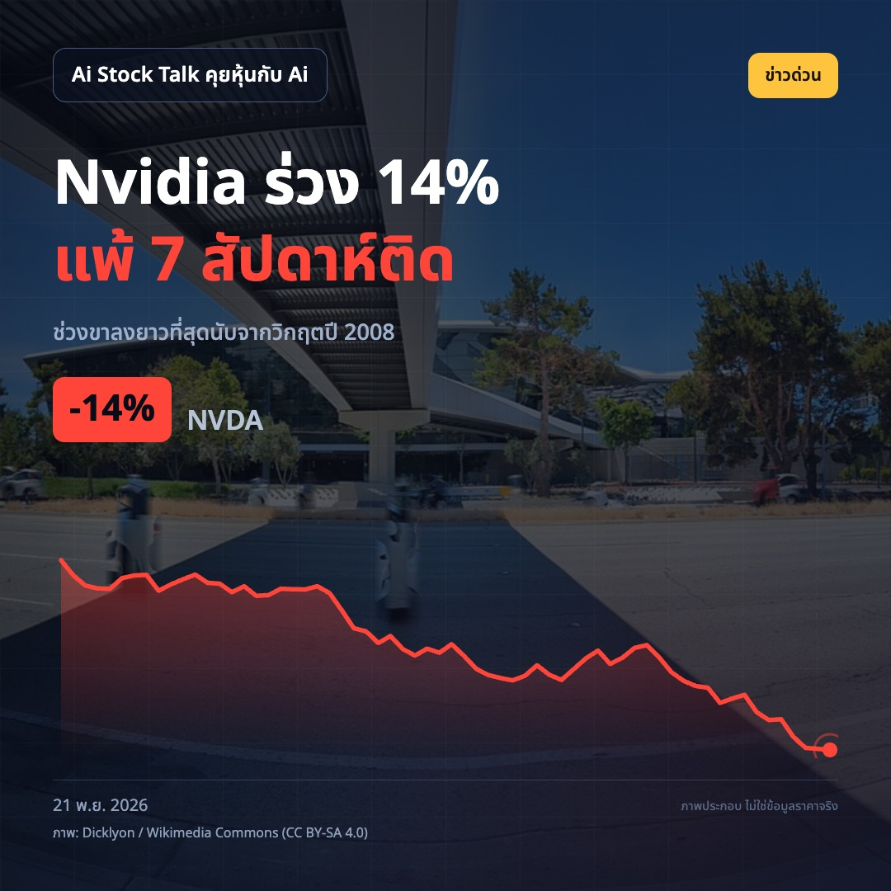
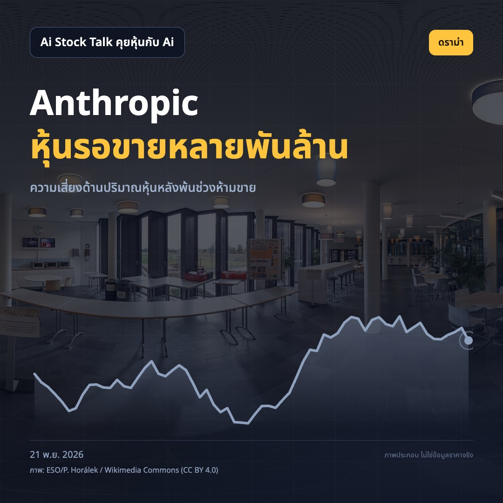
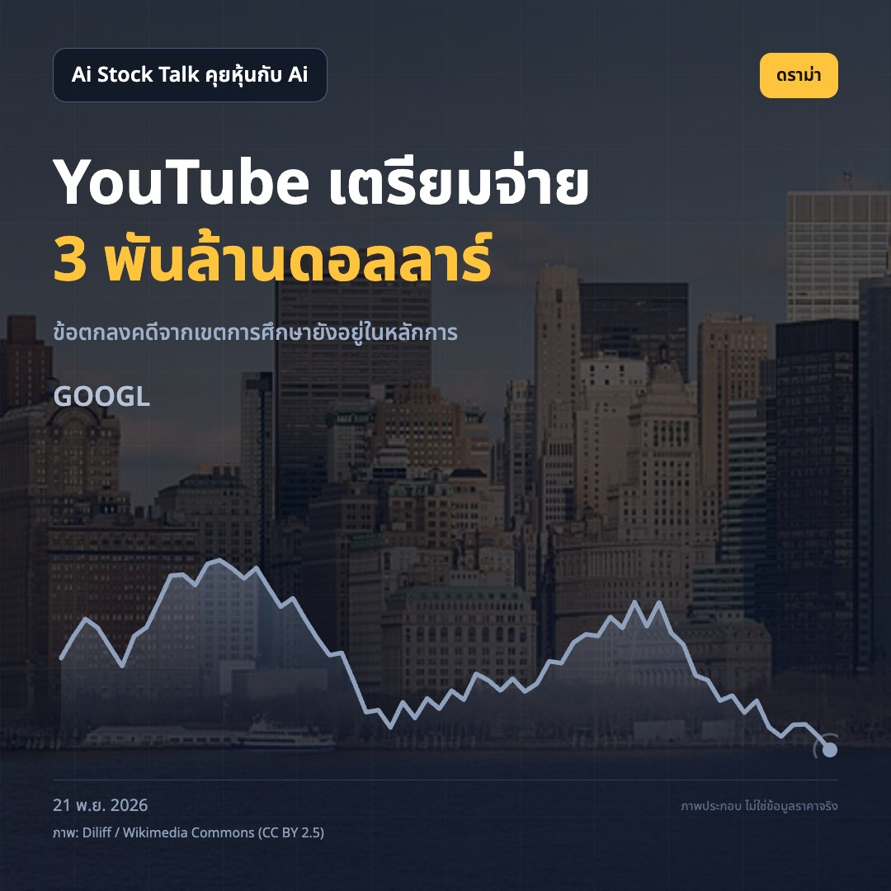

1. หุ้นชิปสูญมูลค่า 2.3 ล้านล้านดอลลาร์ในสัปดาห์เดียว

หุ้นชิปหายไป 2.3 ล้านล้านดอลลาร์ในสัปดาห์เดียว แรงขายในหุ้นที่เกี่ยวข้องกับ AI กดมูลค่าหุ้นกลุ่มเซมิคอนดักเตอร์ลงอย่างหนัก ตัวเลขนี้คือมูลค่าตลาดที่หายไป ไม่ใช่รายได้ของบริษัทที่ลดลง ดัชนีหุ้นเซมิคอนดักเตอร์หลักทำผลงานรายสัปดาห์แย่ที่สุดในรอบ 25 ปี สะท้อนว่าแรงขายกระจายไปทั้งกลุ่ม ไม่ได้หยุดอยู่ที่หุ้นตัวเดียว ทำไมต้องสน: ถ้าพอร์ตมีหุ้นชิปหรือกองทุนเทคสหรัฐฯ การกระจุกตัวในธีม AI อาจทำให้หลายสินทรัพย์ลงพร้อมกันได้ คุณจะทบทวนสัดส่วนหุ้นชิปในพอร์ตหลังสัปดาห์นี้ไหม? ที่มา: https://www.marketwatch.com/story/chip-stocks-see-2-3-trillion-weekly-wipeout-as-panic-grips-the-ai-trade-371f2f03?mod=mw_rss_topstories
หุ้นชิป #หุ้นAI #ลงทุนต่างประเทศ
ภาพ: Dicklyon / Wikimedia Commons (CC BY-SA 4.0)
2. หุ้น Nvidia ร่วง 14% ท่ามกลางแรงขายหุ้น AI

Nvidia ร่วง 14% และแพ้ติดต่อกัน 7 สัปดาห์ หุ้นผู้ผลิตชิป AI รายนี้ปิดสัปดาห์ขาลงต่อเนื่องยาวที่สุดนับจากช่วงวิกฤตการเงินปี 2008 ท่ามกลางแรงขายหุ้นเทคโนโลยี บริษัทเคยมีมูลค่าตลาดสูงที่สุดในโลก แต่ตอนนี้อยู่อันดับ 4 ตามหลัง Apple, Microsoft และ Alphabet อีกแหล่งข่าวระบุว่ามูลค่าตลาด Nvidia หายไป 1.16 ล้านล้านดอลลาร์ใน 7 วันทำการ ทำไมต้องสน: คนไทยที่ถือ NVDA โดยตรง หรือถือกองทุนที่มีหุ้นเทคสหรัฐฯ ควรดูว่าน้ำหนักหุ้นตัวนี้ส่งผลต่อพอร์ตมากเพียงใด หลังการร่วงครั้งนี้ คุณจะดูอะไรเป็นอย่างแรกก่อนตัดสินใจถือหรือขาย? ที่มา: https://www.cnbc.com/2026/11/20/nvidias-7-week-losing-streak-is-longest-since-2008-financial-crisis.html https://www.marketwatch.com/story/nvidias-stock-heads-for-a-stretch-of-weekly-losses-unseen-since-2008-91aba9a6?mod=mw_rss_topstories
Nvidia #หุ้นAI #หุ้นสหรัฐ
ภาพ: Dicklyon / Wikimedia Commons (CC BY-SA 4.0)
3. Nasdaq ลบกำไรปี 2026 หมด ขณะตลาดสหรัฐฯ เข้าเขตปรับฐาน

Nasdaq ลบกำไรปี 2026 หมดแล้ว แรงขายหุ้น AI กดดัชนี Nasdaq จนกำไรที่สะสมมาตลอดปีถูกลบ ขณะที่ Nasdaq ผ่านสัปดาห์ที่แย่ที่สุดนับจากปี 2020 ดัชนี Dow และ S&P 500 เข้าสู่ภาวะปรับฐานด้วย ทั้ง 11 กลุ่มอุตสาหกรรมใน S&P 500 ปิดสัปดาห์ลดลงมากกว่า 1% พร้อมกัน ทำไมต้องสน: นักลงทุนไทยที่ถือกองทุนหุ้นสหรัฐฯ อาจได้รับผลจากการลงของตลาดวงกว้าง แม้ไม่ได้เลือกซื้อหุ้น AI เอง ควรดูว่ากองทุนที่ถืออิงดัชนีใด พอร์ตของคุณรับความผันผวนแบบนี้ได้มากแค่ไหน? ที่มา: https://www.theguardian.com/business/2026/nov/20/global-stock-markets-slump-anthropic-ipo-ai-sell-off https://www.marketwatch.com/story/dow-s-p-500-enter-correction-as-nasdaq-suffers-worst-week-since-2020-bd74dadf?mod=mw_rss_topstories
Nasdaq #หุ้นสหรัฐ #กองทุนรวม
ภาพ: Diliff / Wikimedia Commons (CC BY 2.5)
4. หุ้น Anthropic ยังเจอความเสี่ยงจากหุ้นที่รอพ้นช่วงห้ามขาย

หุ้น Anthropic หลายพันล้านหุ้นยังรอพ้นช่วงห้ามขาย หลังบริษัทเข้าตลาด หุ้นจำนวนมากยังถูกจำกัดการขายตามเงื่อนไขช่วงห้ามขาย เรื่องนี้เกิดขึ้นท่ามกลางแรงขายหุ้น AI ที่กดตลาดในช่วงเดียวกัน เมื่อข้อจำกัดสิ้นสุดลง หุ้นเหล่านั้นอาจเข้าสู่ตลาดมากขึ้น แหล่งข่าวชี้ว่าความเสี่ยงด้านปริมาณหุ้นเสนอขายอาจกดดันราคาตลอดปีข้างหน้า แต่ยังไม่ใช่การยืนยันว่าผู้ถือหุ้นจะขาย ทำไมต้องสน: นักลงทุนไทยที่มองหุ้น AI จากกระแสการเข้าตลาด ควรดูจำนวนหุ้นที่อาจซื้อขายได้ในอนาคตควบคู่กับข่าวธุรกิจ ความเสี่ยงเรื่องหุ้นพ้นช่วงห้ามขายมีผลต่อการตัดสินใจของคุณไหม? ที่มา: https://www.marketwatch.com/story/the-hidden-catch-in-anthropics-ipo-billions-of-locked-up-shares-are-waiting-in-the-wings-279d33ce?mod=mw_rss_topstories
Anthropic #หุ้นAI #ตลาดหุ้นสหรัฐ
ภาพ: ESO/P. Horálek / Wikimedia Commons (CC BY 4.0)
5. YouTube เตรียมจ่าย 3 พันล้านดอลลาร์เพื่อยุติคดีจากโรงเรียน

YouTube เตรียมจ่าย 3 พันล้านดอลลาร์ รายงานระบุว่าบริษัทบรรลุข้อตกลงในหลักการกับเขตการศึกษาหลายพันแห่งในสหรัฐฯ เพื่อยุติข้อกล่าวหาว่าการออกแบบแพลตฟอร์มให้ติดใช้งานส่งผลเสียต่อเด็ก ข้อตกลงที่รายงานยังรวมมาตรการคุ้มครองวัยรุ่นเพิ่มเติม และอาจทำให้ Google เลี่ยงการขึ้นศาลในคดีชุดนี้ได้ ขณะนี้สถานะยังเป็นข้อตกลงในหลักการ ทำไมต้องสน: ผู้ถือหุ้น Alphabet หรือกองทุนเทคที่มีหุ้นบริษัทนี้ควรติดตามทั้งภาระจากการยุติคดีและมาตรการที่อาจเปลี่ยนการใช้งาน YouTube คุณคิดว่ามาตรการคุ้มครองวัยรุ่นควรเริ่มจากจุดไหน? ที่มา: https://www.theverge.com/streaming/1039096/youtube-social-media-addiction-school-districts-settlement
YouTube #Alphabet #หุ้นเทค
ภาพ: Diliff / Wikimedia Commons (CC BY 2.5)
6. Meta ทบทวนเป้าหมายปล่อยก๊าซสุทธิเป็นศูนย์ ขณะขยายดาต้าเซ็นเตอร์ AI

Meta ทบทวนเป้าหมายปี 2030 ท่ามกลางการเร่งสร้าง AI ผู้บริหารกำลังพิจารณาเป้าหมายเดิมที่จะลดการปล่อยก๊าซเรือนกระจกสุทธิเป็นศูนย์ภายในปี 2030 หลังรายงานความยั่งยืนฉบับล่าสุดเปิดเผยว่าการปล่อยก๊าซเพิ่มขึ้นมาก รายงานระบุว่าบริษัทมีอัตราการเพิ่มขึ้นของการปล่อยก๊าซสูงเป็นประวัติการณ์ และสูงกว่าคู่แข่งเทคโนโลยีรายใหญ่ที่กำลังสร้างดาต้าเซ็นเตอร์ AI เช่นกัน ทำไมต้องสน: การขยายโครงสร้างพื้นฐาน AI มีต้นทุนด้านพลังงานและสิ่งแวดล้อมที่ผู้ถือหุ้น Meta ควรติดตามควบคู่กับแผนเติบโต คุณมองต้นทุนด้านนี้เป็นความเสี่ยงต่อการลงทุนหรือไม่? ที่มา: https://arstechnica.com/ai/2026/11/meta-reconsiders-2030-net-zero-goal-amid-record-emissions-from-ai-data-centers/
Meta #ดาต้าเซ็นเตอร์ #หุ้นAI
ภาพ: Diliff / Wikimedia Commons (CC BY 2.5)